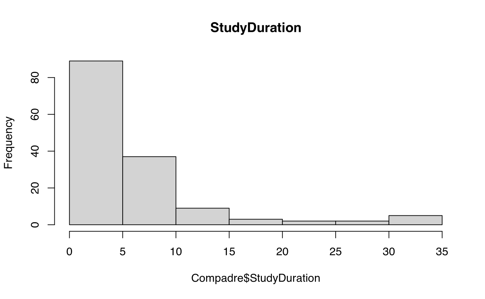
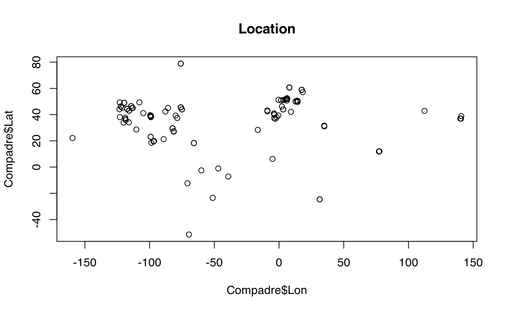
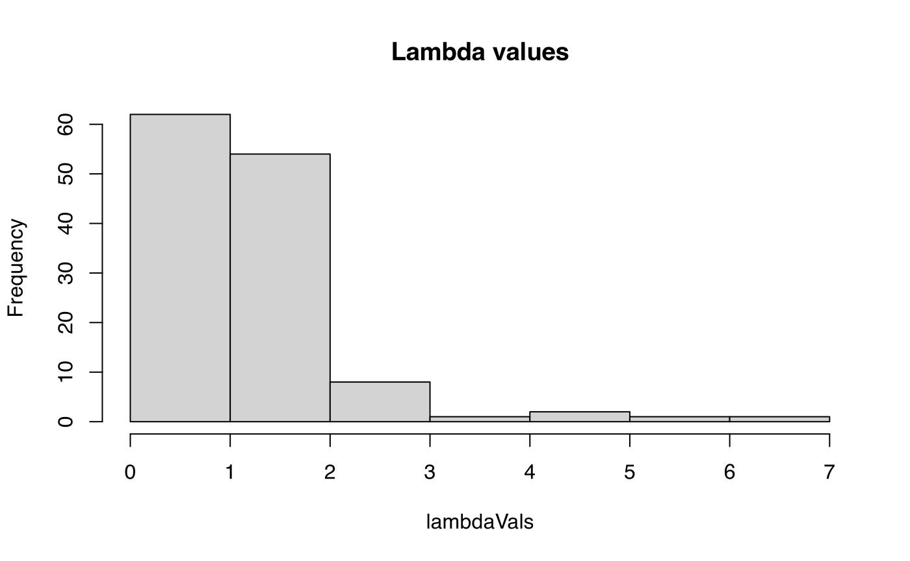

vignettes/a01_GettingStarted.Rmd
a01_GettingStarted.RmdThe COMPADRE and COMADRE Plant and Animal Matrix Databases contain matrix population models (MPMs) and associated metadata obtained from the published literature (Salguero-Gomez et al. 2015, 2016).
Wherever possible the full MPM (the A matrix) has been split into three additional constituent matrices based on the nature of the demographic processes involved. These are the U matrix, which summarises growth and survival; the F matrix, which summarises sexual reproduction; and the C matrix, which summarises asexual (clonal) reproduction. These additional matrices sum to equal the A matrix (A = U + F + C). Thus, each MPM is presented as a list of these 4 matrices in the databases together with information about the MPM stages defined by the author.
In addition, each set of MPMs is associated with metadata including taxonomy of the species studied, the geographic location, the published source information and so on. For further details please see the two papers on COMPADRE and COMADRE (Salguero-Gomez et al. 2015, 2016), and the User Guide which is available via the website (compadre-db.org/).
The databases are distributed as Rdata files containing
a list class object which provides the data in a structured
format. Although it is possible to use the database without using the
Rcompadre package this is not recommended. Rcompadre
provides users with a range of useful tools for working with the
database that will greatly improve user experience.
Importantly, Rcompadre coerces the data as a so-called
CompadreDB S4 class object. The details of what this means
is beyond the scope of this vignette, apart from that the object has two
slots called CompadreData and
VersionData.
CompadreData contains a tibble-style data frame that
includes a list column of matrix population models (MPMs) alongside
associated metadata columns. Each element of the matrix column of the
data frame (mat) contains a list of MPMs, while remaining
columns include metadata associated with the matrices, while
VersionData is a list of information about the database
version. In practice, knowledge of the details of this structure is not
necessary thanks to the tools provided by the Rcompadre
package.
To get started you will first need to download the COMPADRE (or COMADRE) dataset from the website at compadre-db.org/.
When you have done that you can load it into R using
load(). It is usually a good idea to set up your working
directory at this point. Assuming you are working in the same directory
as your database file we can load the database like this. You should
ensure that the database is of the correct class using
as_cdb():
Alternatively, cdb_fetch() will automatically download
the latest version of COMPADRE or COMADRE from the website, and ensure
it is of the correct class. For example:
Compadre <- cdb_fetch("compadre")For this vignette we will use the sample of COMPADRE data that is distributed with the package. This dataset is intended for demonstration and learning purposes only and should not be used for real analyses! You can load it like this:
data(Compadre)We can now ask for a summary of this object, which will tell us that
it is a CompadreDB class S4 object. Simply
typing the name of the object (Compadre in this case) will
give a brief summary of its contents and display the first few rows of
the data (which is a tibble). Please see the
tibble vignette1 for information about this object type, and
how it differs from data.table.
summary(Compadre)
#> Length Class Mode
#> 1 CompadreDB S4
Compadre
#> A COM(P)ADRE database ('CompadreDB') object with 110 SPECIES and 150 MATRICES.
#>
#> # A tibble: 150 × 49
#> mat SpeciesAuthor SpeciesAccepted CommonName Genus Family Order Class
#> <list> <chr> <chr> <chr> <chr> <fct> <fct> <fct>
#> 1 <CompdrMt> Setaria_incra… Setaria incras… NA Seta… Poace… Poal… Lili…
#> 2 <CompdrMt> Lechea_cernua Lechea cernua NA Lech… Cista… Malv… Magn…
#> 3 <CompdrMt> Actinostemon_… Actinostemon c… NA Acti… Eupho… Malp… Magn…
#> 4 <CompdrMt> Gaura_neomexi… Gaura neomexic… NA Gaura Onagr… Myrt… Magn…
#> 5 <CompdrMt> Eriogonum_lon… Eriogonum long… Buckwheat Erio… Polyg… Cary… Magn…
#> 6 <CompdrMt> Platanthera_h… Platanthera ho… NA Plat… Orchi… Aspa… Lili…
#> 7 <CompdrMt> Succisa_prate… Succisa praten… NA Succ… Capri… Dips… Magn…
#> 8 <CompdrMt> Haplopappus_r… Pyrrocoma radi… NA Pyrr… Compo… Aste… Magn…
#> 9 <CompdrMt> Astragalus_tr… Astragalus tre… NA Astr… Legum… Faba… Magn…
#> 10 <CompdrMt> Plantago_coro… Plantago coron… NA Plan… Plant… Lami… Magn…
#> # ℹ 140 more rows
#> # ℹ 41 more variables: Phylum <fct>, Kingdom <fct>, OrganismType <fct>,
#> # DicotMonoc <fct>, AngioGymno <fct>, Authors <chr>, Journal <chr>,
#> # YearPublication <chr>, DOI_ISBN <chr>, AdditionalSource <chr>,
#> # StudyDuration <dbl>, StudyStart <dbl>, StudyEnd <dbl>,
#> # ProjectionInterval <chr>, NumberPopulations <dbl>,
#> # MatrixCriteriaSize <fct>, MatrixCriteriaOntogeny <fct>, …This summary tells us that we have successfully loaded the data, and
that there are 150 matrices. The database also contains some Version
information which can be accessed using the command
VersionData(Compadre). This includes information including
the version number, date created, and link to the database user
agreement.
VersionData(Compadre)
#> $Version
#> [1] "X.X.X"
#>
#> $DateCreated
#> [1] "Nov_22_2017"
#>
#> $Agreement
#> [1] "http://www.compadre-db.org/Page/UserAgreement"The database includes a range of metadata associated with the
matrices including taxonomic information, geolocation, details of the
publication from which matrix was obtained and so on. A full description
of these variables can be found in the User Guide via the COMPADRE
website. A list of metadata can be obtained simply by using the
names() command, in the same way that you would for a data
frame. Each element of the mat column contains a list of
the four matrices (A, U,
F, C) and information on matrix stages
while the other columns are ordinary vectors.
names(Compadre)
#> [1] "mat" "SpeciesAuthor" "SpeciesAccepted"
#> [4] "CommonName" "Genus" "Family"
#> [7] "Order" "Class" "Phylum"
#> [10] "Kingdom" "OrganismType" "DicotMonoc"
#> [13] "AngioGymno" "Authors" "Journal"
#> [16] "YearPublication" "DOI_ISBN" "AdditionalSource"
#> [19] "StudyDuration" "StudyStart" "StudyEnd"
#> [22] "ProjectionInterval" "NumberPopulations" "MatrixCriteriaSize"
#> [25] "MatrixCriteriaOntogeny" "MatrixCriteriaAge" "MatrixPopulation"
#> [28] "Lat" "Lon" "Altitude"
#> [31] "Country" "Continent" "Ecoregion"
#> [34] "StudiedSex" "MatrixComposite" "MatrixTreatment"
#> [37] "MatrixCaptivity" "MatrixStartYear" "MatrixStartSeason"
#> [40] "MatrixStartMonth" "MatrixEndYear" "MatrixEndSeason"
#> [43] "MatrixEndMonth" "MatrixSplit" "MatrixFec"
#> [46] "Observation" "MatrixDimension" "SurvivalIssue"
#> [49] "AnnualPeriodicity"We can explore this information in various ways, for example, by producing tables, histograms, or other plots of variables of interest.
table(Compadre$DicotMonoc)
#>
#> Eudicot Monocot
#> 108 37
hist(Compadre$StudyDuration, main = "StudyDuration")
plot(Compadre$Lon, Compadre$Lat, main = "Location")
If, for example, you want to check if a species is in the database
you can use the cdb_check_species() function. For example,
we can ask if the species Succisa pratensis is present.
cdb_check_species(Compadre, "Succisa pratensis")
#> species in_db
#> 1 Succisa pratensis TRUEThe function works with vectors of species names as follows.
spList <- c("Succisa pratensis", "Onodrim ent", "Aster amellus")
cdb_check_species(Compadre, spList)
#> species in_db
#> 1 Succisa pratensis TRUE
#> 2 Onodrim ent FALSE
#> 3 Aster amellus TRUEOptionally, the function can return a subset of the database restricted to matched species names.
compadre_succisa <- cdb_check_species(Compadre, "Succisa pratensis",
return_db = TRUE
)
compadre_succisa
#> A COM(P)ADRE database ('CompadreDB') object with 1 SPECIES and 2 MATRICES.
#>
#> # A tibble: 2 × 49
#> mat SpeciesAuthor SpeciesAccepted CommonName Genus Family Order Class
#> <list> <chr> <chr> <chr> <chr> <fct> <fct> <fct>
#> 1 <CompdrMt> Succisa_praten… Succisa praten… NA Succ… Capri… Dips… Magn…
#> 2 <CompdrMt> Succisa_praten… Succisa praten… NA Succ… Capri… Dips… Magn…
#> # ℹ 41 more variables: Phylum <fct>, Kingdom <fct>, OrganismType <fct>,
#> # DicotMonoc <fct>, AngioGymno <fct>, Authors <chr>, Journal <chr>,
#> # YearPublication <chr>, DOI_ISBN <chr>, AdditionalSource <chr>,
#> # StudyDuration <dbl>, StudyStart <dbl>, StudyEnd <dbl>,
#> # ProjectionInterval <chr>, NumberPopulations <dbl>,
#> # MatrixCriteriaSize <fct>, MatrixCriteriaOntogeny <fct>,
#> # MatrixCriteriaAge <fct>, MatrixPopulation <chr>, Lat <dbl>, Lon <dbl>, …Matrices in CompadreDB objects are stored in a special
vector, called mat as part of the data. However, the
matrices are stored as special objects within the data frame and should
be addressed using Rcompadre accessor functions to obtain the A, U, F
and C matrices (see the User Guide), or information about the stage
definitions used.
Thus, to obtain the A matrix, which includes all types of transition
one would use the matA() function, which will return a list
of A matrices from the database (there are equivalent functions,
matU(), matF() and matC():
matA(compadre_succisa)
#> [[1]]
#> A1 A2 A3 A4 A5 A6
#> A1 0.00 0.000 0.000 0.000 1.006 1.851
#> A2 0.55 0.492 0.150 0.000 0.000 0.000
#> A3 0.25 0.356 0.450 0.067 0.000 0.099
#> A4 0.00 0.137 0.321 0.568 0.358 0.197
#> A5 0.00 0.000 0.064 0.167 0.269 0.197
#> A6 0.00 0.000 0.000 0.184 0.358 0.493
#>
#> [[2]]
#> A1 A2 A3 A4 A5
#> A1 0.0600000 0.0000000 0.00000 0.00 3.91724308
#> A2 0.0020685 0.0000000 0.00000 0.00 0.13504696
#> A3 0.0000000 0.7333333 0.40625 0.12 0.01923077
#> A4 0.0000000 0.0000000 0.34375 0.70 0.53846154
#> A5 0.0000000 0.0000000 0.00000 0.14 0.36538462Thus one could select particular matrices from this list using
[[ ]] syntax
x <- matA(compadre_succisa)
x[[1]]
#> A1 A2 A3 A4 A5 A6
#> A1 0.00 0.000 0.000 0.000 1.006 1.851
#> A2 0.55 0.492 0.150 0.000 0.000 0.000
#> A3 0.25 0.356 0.450 0.067 0.000 0.099
#> A4 0.00 0.137 0.321 0.568 0.358 0.197
#> A5 0.00 0.000 0.064 0.167 0.269 0.197
#> A6 0.00 0.000 0.000 0.184 0.358 0.493It is often desirable to know what the stages are in the matrices. To
access this information you can use the matrixClass()
function. As with the other matrix accessor functions, the function
returns a list which can be subsetted using square brackets.
classInfo <- matrixClass(compadre_succisa)
classInfo[[1]]
#> MatrixClassOrganized
#> 1 active
#> 2 active
#> 3 active
#> 4 active
#> 5 active
#> 6 active
#> MatrixClassAuthor
#> 1 Seedling
#> 2 Juvenile
#> 3 Small vegetative
#> 4 Large vegetative (not flowering but larger than small vegetatives)
#> 5 Small flowering
#> 6 Large flowering
#> MatrixClassNumber
#> 1 1
#> 2 2
#> 3 3
#> 4 4
#> 5 5
#> 6 6
classInfo[[1]]$MatrixClassAuthor
#> [1] "Seedling"
#> [2] "Juvenile"
#> [3] "Small vegetative"
#> [4] "Large vegetative (not flowering but larger than small vegetatives)"
#> [5] "Small flowering"
#> [6] "Large flowering"It is often desirable to subset the data based on sets of criteria.
As with a normal data frame these databases can be subset using
subset(). For example, I could subset to only Eudicot
species as follows:
x <- subset(Compadre, DicotMonoc == "Eudicot")
x
#> A COM(P)ADRE database ('CompadreDB') object with 80 SPECIES and 108 MATRICES.
#>
#> # A tibble: 108 × 49
#> mat SpeciesAuthor SpeciesAccepted CommonName Genus Family Order Class
#> <list> <chr> <chr> <chr> <chr> <fct> <fct> <fct>
#> 1 <CompdrMt> Lechea_cernua Lechea cernua NA Lech… Cista… Malv… Magn…
#> 2 <CompdrMt> Actinostemon_… Actinostemon c… NA Acti… Eupho… Malp… Magn…
#> 3 <CompdrMt> Gaura_neomexi… Gaura neomexic… NA Gaura Onagr… Myrt… Magn…
#> 4 <CompdrMt> Eriogonum_lon… Eriogonum long… Buckwheat Erio… Polyg… Cary… Magn…
#> 5 <CompdrMt> Succisa_prate… Succisa praten… NA Succ… Capri… Dips… Magn…
#> 6 <CompdrMt> Haplopappus_r… Pyrrocoma radi… NA Pyrr… Compo… Aste… Magn…
#> 7 <CompdrMt> Astragalus_tr… Astragalus tre… NA Astr… Legum… Faba… Magn…
#> 8 <CompdrMt> Plantago_coro… Plantago coron… NA Plan… Plant… Lami… Magn…
#> 9 <CompdrMt> Petrocoptis_p… Silene glaucif… NA Sile… Caryo… Cary… Magn…
#> 10 <CompdrMt> Astragalus_pe… Astragalus pec… NA Astr… Legum… Faba… Magn…
#> # ℹ 98 more rows
#> # ℹ 41 more variables: Phylum <fct>, Kingdom <fct>, OrganismType <fct>,
#> # DicotMonoc <fct>, AngioGymno <fct>, Authors <chr>, Journal <chr>,
#> # YearPublication <chr>, DOI_ISBN <chr>, AdditionalSource <chr>,
#> # StudyDuration <dbl>, StudyStart <dbl>, StudyEnd <dbl>,
#> # ProjectionInterval <chr>, NumberPopulations <dbl>,
#> # MatrixCriteriaSize <fct>, MatrixCriteriaOntogeny <fct>, …These subset arguments can be as complex as needed. For example, to subset to only Eudicot species from the United States or Canada and where the matrix dimension is >2 I could use the following command:
You can compare compadre data sets using the
cdb_compare() command:
cdb_compare(Compadre, x)
#> Quick Summary...
#>
#> cdb1 contains data for:
#> 95 source papers
#> 110 accepted species
#> 150 matrices
#>
#> cdb2 contains data for:
#> 28 source papers
#> 29 accepted species
#> 41 matricesNumerous matrix calculations (Caswell 2001) have particular
requirements for use. The details are beyond the scope of this vignette,
but include things like (1) ergodicity, (2) primitivity, (3) singularity
and (4) irreducibility. In addition, most matrix calculations will not
work if there are missing values (i.e. NA) in the MPM.
We can flag these by adding metadata using the
cdb_flag() function.
Compadre_flagged <- cdb_flag(Compadre)We could then use subset() like this:
x <- subset(Compadre_flagged, check_NA_A == FALSE & check_ergodic == TRUE)When we have a set of matrices that we want to make calculations
from, we can use sapply() to apply a function across all
the matrices in the list produced by matA(). For example,
to calculate lambda from all the A matrices we can
apply the function eigs() from the popdemo
package to obtain lambda for the matrices in the x object
produced above. Then we can examine a summary, produce a histogram
etc.
lambdaVals <- sapply(matA(x), popdemo::eigs, what = "lambda")
summary(lambdaVals)
#> Min. 1st Qu. Median Mean 3rd Qu. Max.
#> 0.2303 0.9331 1.0024 1.2482 1.1355 6.6145
hist(lambdaVals, main = "Lambda values")
Caswell, H. (2001). Matrix Population Models: Construction, Analysis, and Interpretation. 2nd edition. Sinauer Associates, Sunderland, MA. ISBN-10: 0878930965
Salguero‐Gómez, R. , Jones, O. R., Archer, C. R., Buckley, Y. M., Che‐Castaldo, J. , Caswell, H. , Hodgson, D. , Scheuerlein, A. , Conde, D. A., Brinks, E. , Buhr, H. , Farack, C. , Gottschalk, F. , Hartmann, A. , Henning, A. , Hoppe, G. , Römer, G. , Runge, J. , Ruoff, T. , Wille, J. , Zeh, S. , Davison, R. , Vieregg, D. , Baudisch, A. , Altwegg, R. , Colchero, F. , Dong, M. , Kroon, H. , Lebreton, J. , Metcalf, C. J., Neel, M. M., Parker, I. M., Takada, T. , Valverde, T. , Vélez‐Espino, L. A., Wardle, G. M., Franco, M. and Vaupel, J. W. (2015), The COMPADRE Plant Matrix Database: an open online repository for plant demography. J Ecol, 103: 202-218. <:10.1111/1365-2745.12334>
Salguero‐Gómez, R. , Jones, O. R., Archer, C. R., Bein, C. , Buhr, H. , Farack, C. , Gottschalk, F. , Hartmann, A. , Henning, A. , Hoppe, G. , Römer, G. , Ruoff, T. , Sommer, V. , Wille, J. , Voigt, J. , Zeh, S. , Vieregg, D. , Buckley, Y. M., Che‐Castaldo, J. , Hodgson, D. , Scheuerlein, A. , Caswell, H. and Vaupel, J. W. (2016), COMADRE: a global data base of animal demography. J Anim Ecol, 85: 371-384. <:10.1111/1365-2656.12482>